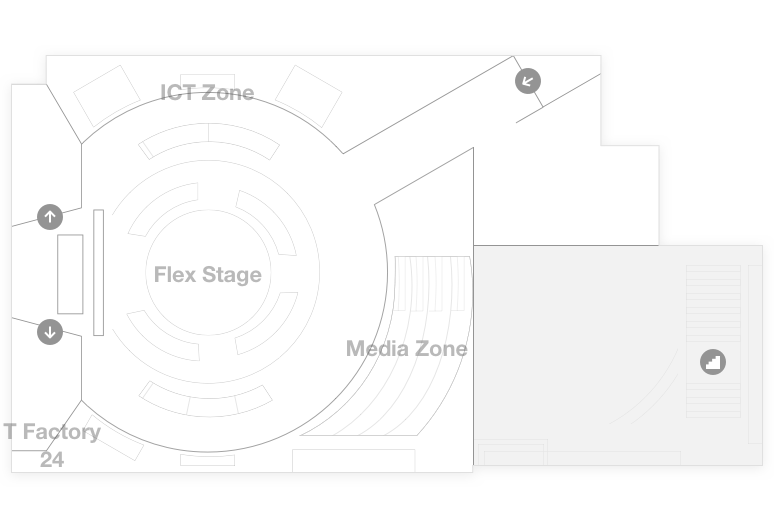
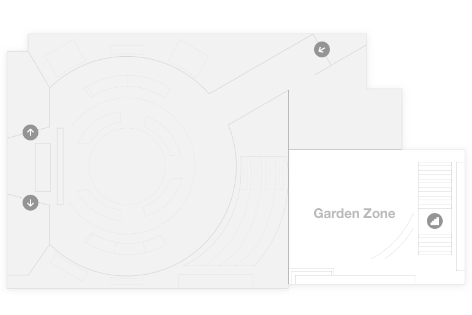
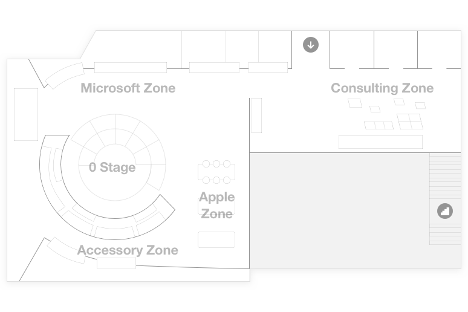

{{ $t('main.tab-title1') }}
1F


1.5F


2F


{{ $t('main.tab-title2') }}
-
 {{history.BUTTON}}
{{history.BUTTON}}{{history.PET_NAME}} 외 {{historyDqr[dateIndex] - 1}}개 구경했습니다.
{{history.PET_NAME}} 외 {{historyFvd[dateIndex] - 1}}개 관심 상품으로 저장했습니다.
{{history.MESSAGE}}
{{history.TIME}}{{history.PET_NAME}} {{history.PET_NAME}}
T Factory 체크인 이력이 없어요
T Factory를 다양하게 체험해 보고,
나만의 타임라인을 만들어보세요.